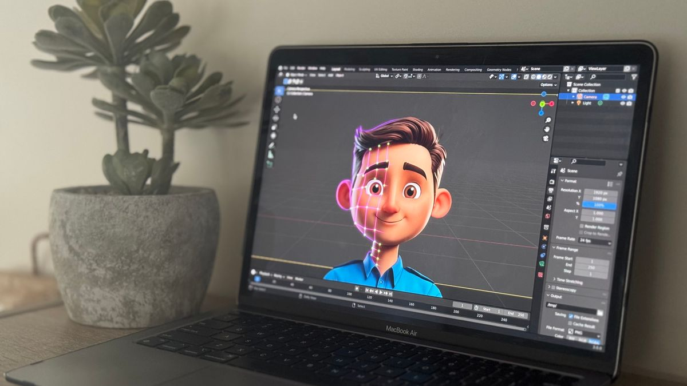
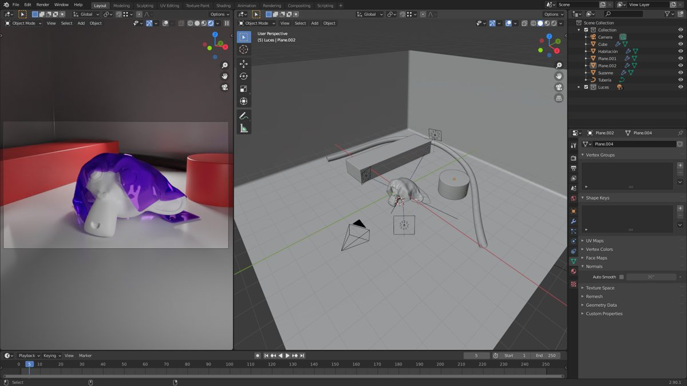
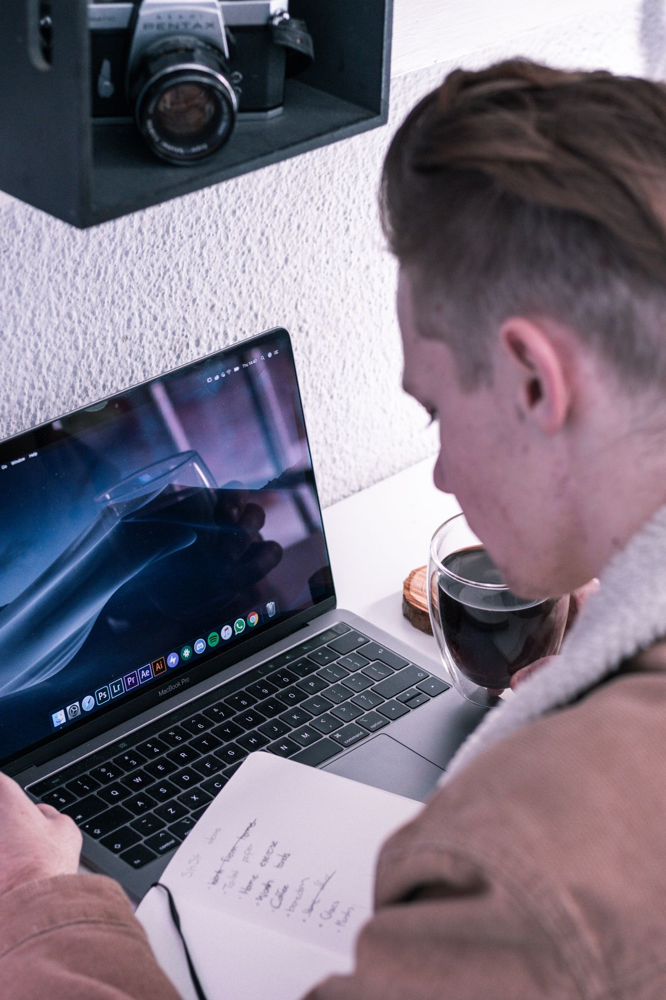

Cara belajar Blender gratis untuk pemula bisa dimulai malam ini juga: unduh Blender di blender.org, ikuti manual resmi dan video tutorial gratis, lalu buat proyek kecil pertama seperti cangkir atau meja. Blender gratis selamanya. Kamu bisa mengunduh, memakai, dan memakainya untuk kerja komersial tanpa membayar apa pun, karena lisensinya GPL dan dananya datang dari donasi. Film Flow yang menang Oscar Film Animasi Terbaik 2025 saja dibuat sepenuhnya dengan Blender. Jadi kalau selama ini kamu mengira bikin animasi 3D butuh software langganan mahal, anggapan itu sudah ketinggalan. Kuncinya bukan menghafal semua menu, melainkan menyelesaikan satu proyek kecil sampai selesai, lalu mengulang dengan proyek yang sedikit lebih sulit. Semua bahan belajarnya gratis, jadi yang kamu butuhkan hanya laptop dan waktu luang. Artikel ini menjelaskan apa yang bisa dibuat Blender, kenapa ia gratis, dan langkah belajarnya dari nol sampai render pertama.
Blender adalah software 3D gratis dan open source untuk modeling, sculpting, animasi, simulasi, rendering, compositing, dan edit video dalam satu aplikasi. Lisensinya GNU General Public License (GPL), jadi kamu bebas memakainya untuk tujuan apa pun, termasuk kerja komersial dan pendidikan, tanpa membeli lisensi. Proyek ini dikoordinasi Blender Foundation dan didanai donasi serta keanggotaan Development Fund, bukan dari penjualan software. Versi terbaru Blender 5.3.0 rilis 10 November 2026 dan tersedia untuk Windows, macOS, dan Linux lewat blender.org. Buktinya bukan janji: film Flow dibuat sepenuhnya di Blender, dirender dengan mesin EEVEE, dan menang Oscar Film Animasi Terbaik pada 2 Maret 2025 di Academy Awards ke-97. Sebagai perbandingan, langganan tahunan Autodesk Maya tercatat 2.010 dolar AS. Jadi alat sekelas software studio besar bisa kamu pakai dengan biaya lisensi nol, asal mau melewati masa belajarnya yang memang tidak sebentar.

Apa saja yang bisa dibuat dengan Blender gratis?
Jawaban singkatnya: hampir semua yang berhubungan dengan 3D. Blender menggabungkan modeling, sculpting, rigging, animasi, simulasi, rendering, compositing, dan edit video dalam satu aplikasi, jadi kamu tidak perlu pindah-pindah software untuk menyelesaikan satu proyek. Satu aplikasi ini dipakai untuk membuat model karakter dan objek game, animasi pendek, visualisasi arsitektur, dan efek visual film. Studio kecil, freelancer, sampai penghobi memakai alat yang sama, karena tidak ada fitur yang dikunci di balik pembayaran. Kalau kamu pernah menonton Flow, kamu sudah melihat hasil akhirnya: film itu dibuat sepenuhnya di Blender dan dirender dengan mesin EEVEE. Jadi pertanyaannya bukan lagi apakah Blender cukup kuat, melainkan apakah kamu mau meluangkan waktu mempelajarinya.

Kenapa Blender gratis selamanya, bukan sekadar masa trial?
Blender gratis karena lisensinya, bukan karena promosi. Software ini dirilis di bawah GNU General Public License (GPL), yang memberi kebebasan memakai Blender untuk tujuan apa pun, termasuk kerja komersial dan pendidikan. Tidak ada paket berbayar yang menyembunyikan fitur, dan tidak ada paid tier sama sekali. Proyek ini dikoordinasi Blender Foundation dan dananya datang dari donasi serta keanggotaan Development Fund. Di halaman unduh resminya per November 2026, Blender Foundation memang mengajak pengguna berdonasi 10 dolar, tapi itu ajakan sukarela, bukan harga: tombol unduhnya tetap gratis tanpa kartu kredit. Bandingkan dengan Autodesk Maya, software 3D sekelas studio yang langganan tahunannya tercatat 2.010 dolar AS. Selisihnya bukan karena Blender versi murahan, melainkan karena model dananya berbeda. Satu hal yang perlu diluruskan: Blender Studio, layanan berisi aset dan materi pelatihan produksi, memang berlangganan. Tapi itu layanan tambahan yang terpisah, softwarenya sendiri tetap gratis.
Bagaimana cara mulai memakai Blender hari ini?
Malam ini juga kamu sudah bisa mulai, dan tidak perlu menyiapkan apa pun selain laptop. Ikuti lima langkah ini:
- Unduh dari blender.org. Pilih sesuai sistem operasimu: Windows, macOS, atau Linux. Versi terbaru per November 2026 adalah Blender 5.3.0, dan installer Windows-nya sekitar 366 MB. Jangan unduh dari situs lain, karena hanya situs resmi yang menjamin berkasnya bersih.
- Install seperti aplikasi biasa, lalu buka. Tampilan pertamanya memang padat. Jangan panik, semua pemula melewati fase ini.
- Pelajari dasarnya lewat manual resmi dan video tutorial gratis. Manual resminya tersedia lengkap tanpa bayar, dan kanal video resmi Blender Studio juga bisa ditonton gratis.
- Buat proyek kecil pertama, misalnya memodelkan cangkir atau meja. Proyek kecil membuatmu belajar alat dasar tanpa tenggelam di menu yang belum perlu.
- Render hasil pertamamu dengan EEVEE, mesin render cepat Blender. Simpan hasilnya, lalu ulangi dengan proyek yang sedikit lebih sulit. Kalau mentok, komunitas Blender di forum dan Discord siap membantu.

Apa batasan Blender yang perlu kamu tahu sebelum mulai?
Gratis bukan berarti tanpa kekurangan, dan jujur soal ini penting supaya kamu tidak kecewa di tengah jalan. Pertama, antarmukanya padat dan kurva belajarnya curam: panduan-panduan pemula sepakat Blender sulit dipelajari pada awalnya, jadi siapkan waktu berminggu-minggu sebelum hasilnya terlihat rapi. Kedua, render adegan yang berat butuh perangkat yang memadai dan waktu tunggu. Ketiga, tidak ada paket dukungan berbayar resmi: kalau ada masalah, bantuan datang dari forum komunitas, bukan dari layanan pelanggan vendor. Keempat, software gratis bukan berarti produksi gratis: perangkat, listrik, dan waktumu tetap ada biayanya. Kalau empat hal ini masih bisa kamu terima, Blender adalah alat 3D gratis paling lengkap yang bisa kamu pakai hari ini.
Blender membuktikan alat kelas studio tidak harus berlangganan. Unduh malam ini, buat cangkir pertamamu, dan biarkan rasa penasaran yang menuntun langkah berikutnya. Film pemenang Oscar itu dibuat dengan alat yang sama yang bisa kamu unduh gratis malam ini.
Baca juga: jelajahi rubrik Other untuk alat gratis lainnya, seperti DaVinci Resolve gratis buat edit video dan OBS Studio gratis buat rekam layar dan live streaming. Kalau kamu butuh alternatif Photoshop di browser, baca juga panduan Photopea di rubrik Other.
Sumber dan Info Resmi
Angka dan tanggal di artikel ini merujuk ke sumber berikut:
- Blender Foundation: Blender gratis untuk tujuan apa pun termasuk komersial dan pendidikan di bawah lisensi GPL; proyek dikoordinasi Blender Foundation dan didanai donasi; Blender Studio berlangganan terpisah untuk aset dan materi pelatihan.
- Blender: Blender 5.3.0 rilis 10 November 2026; installer Windows 366 MB; tersedia untuk Windows, macOS, dan Linux; ajakan donasi 10 dolar bersifat sukarela, bukan harga.
- Linux Magazine: film Flow menang Oscar Film Animasi Terbaik di Academy Awards ke-97 pada 2 Maret 2025 dan dibuat dengan Blender.
- iAnimate: Flow dibuat sepenuhnya di Blender dan dirender dengan mesin EEVEE.
- Super Renders Farm: Maya dan 3ds Max masing-masing 2.010 dolar AS per tahun; Blender gratis; software gratis bukan berarti produksi gratis.
- Rankite: Maya 255 dolar per bulan atau 2.010 dolar per tahun, harga Autodesk diperiksa 16 November 2026.
- Super Renders Farm: Blender mencakup modeling, sculpting, animasi, simulasi, rendering, compositing, dan edit video dalam satu aplikasi; lisensi GPL.
- Meshy: Blender pilihan gratis terkuat untuk pipeline 3D penuh; sulit dipelajari pada awalnya; ekosistem tutorial gratis terbesar.
- ToolRadar: Blender tanpa paid tier, tidak ada fitur yang dikunci di balik pembayaran; tidak ada paket dukungan berbayar resmi, bantuan datang dari forum komunitas.
- Zeus Animation: Blender open source dan gratis; unduh dari blender.org; proyek kecil seperti cangkir atau meja; komunitas di Discord dan Facebook.
- BelajarAI Tijars: dokumentasi resmi Blender tersedia lengkap dan gratis, termasuk manual dan kanal video resmi Blender Studio.